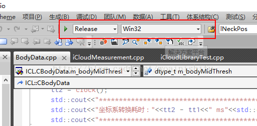

原文地址：http://blog.csdn.net/woainishifu/article/details/54017550
最近要把一个之前在32位平台下编译的项目改成64位平台，之前从来没搞过关于64位的东西，所以到处查资料，所幸搞成功了，把过程记录一下，防止以后忘记。
首先声明：64位平台无法直接调用32位dll，32平台也无法直接调用64位dll。
使用工具：VS2010
首先，用VS2010打开之前的项目，这时候项目的平台是32位的，如下图所示：

点击Win32那里，选择“配置管理器”：

还是点击“Win32”那里，选择“新建”：

可以看到其实x64平台已经存在了，选择x64，然后下面“从此处复制设置”就选择“Win32”
点击“确定”就可以了。然后查看一下“属性 -> 链接器 -> 高级 -> 目标计算机”是否是x64的：

这样就完成了！编译运行即可生成64位的dll，只不过这次生成的dll不是在系统目录的Debug或者Release文件夹下，而是在一个x64文件夹下对应的Debug和Release文件夹下面。